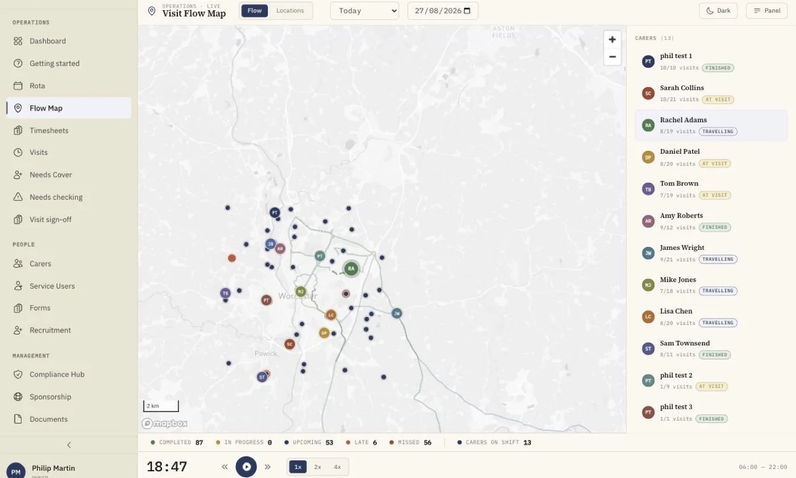

Mapping and Route Planning Software for Domiciliary Care Companies
Your rota is a map whether you look at it that way or not. See every visit and every carer on one live map, plan runs that keep each carer's day in one area, and prove every call happened with GPS verification.
Every Carer, Every Visit, One Live Map
The Visit Flow Map plots every carer and every visit on an interactive map. Watch visits progress through the day, spot late arrivals the moment they happen, and understand travel patterns across your whole patch. Scrub back through the timeline to see how any day actually unfolded, all from one screen in the office.

Mapping software for domiciliary care companies plots every visit and every carer on a real map, so coordinators can plan runs geographically, cut travel time between visits and verify each call happened where it should. In homecareOS, the live Visit Flow Map shows carer locations and visit status in real time, the rota factors actual travel times between consecutive visits, and every check-in and check-out is GPS verified for compliance and billing evidence. Run templates group visits into recurring rounds so carers spend more of the day caring and less of it driving between far-flung calls. The cost of ignoring geography is real: agencies scheduling without travel awareness waste an estimated £2,400 a month on inefficient routing. Because the map, the rota and the care record sit in one platform, a late arrival is visible immediately, and cover suggestions already account for how far each available carer must travel.
Why Coordinators Plan on the Map
Travel is the hidden line on every domiciliary care rota. These tools make it visible, plannable and provable.
Live Visit Flow Map
Watch your carers move through the day on a real-time map. Visit status, locations and a timeline you can scrub through.
Travel Time Between Visits
The rota factors actual travel times between calls, so carers aren't rushed and service users aren't kept waiting.
Geographic Run Planning
Run templates group visits into recurring rounds, so each carer's day stays in one area instead of criss-crossing town.
GPS-Verified Check-In/Out
Carers confirm arrival and departure with one tap, GPS verified, giving you evidence for compliance, billing and safeguarding.
Spot Late Arrivals Instantly
Late and missed visits stand out on the map and the rota the moment the window slips, so you act before the family calls.
Distance-Aware Cover
The AI cover finder weighs distance alongside continuity and hours headroom, so a vacant visit goes to someone nearby.
Plan the Day Around Real Journeys
The drag-and-drop rota shows every carer, every visit and every travel gap on one screen. Because travel time sits inside the schedule rather than in a coordinator's head, you can see at a glance when a run is too tight, and the AI rota builder schedules around availability, preferences, qualifications and travel when it drafts the week for you.

Mapping and Travel Tools, End to End
From planning runs on the map to proving each visit happened, geography runs through the whole platform.
Interactive Visit Flow Map
Every carer and every visit plotted on a real map, updating live through the day, with visit status visible at a glance.
Timeline scrubbing
Replay any day on the map. Scrub back through the timeline to see how visits actually unfolded, useful for reviews and queries.
Travel time between consecutive visits
Actual travel times sit inside the rota, so a carer is never scheduled to be in two places with no time to drive between them.
Run templates for recurring rounds
Build a round once and apply it across weeks. Keep the same carers on the same geographic runs for continuity and shorter journeys.
GPS-verified check-in and check-out
One tap on the carer app confirms arrival and departure with GPS, an accurate record for compliance, billing and safeguarding.
Late and missed visit visibility
Overdue visits pulse red on the rota and stand out on the map, so the office spots a problem before it becomes a complaint.
Distance-weighted cover suggestions
When a carer calls in sick, the AI cover finder ranks available carers on continuity, distance and hours headroom, nearest sensible option first.
Carer day view with travel
On the mobile app, carers see their full day at a glance: visits, travel time, breaks and service user details, even offline.
What Geography-Blind Scheduling Costs
When the rota ignores the map, the losses land on mileage, missed windows and morale.
Balancing travel, time windows and workload is what operational-research literature calls the home health care routing and scheduling problem, a well-studied challenge that the homecareOS scheduling engine is built around.
See the evidence →Domiciliary Care Mapping: Frequently Asked Questions
Maps, travel time, GPS verification and cost, answered.
See Your Patch on One Live Map
Book a personalised demo and watch the Visit Flow Map, travel-aware rota and GPS verification working with a real day's visits.
Compare homecareOS to your current software
See how we stack up against every major UK home care platform, feature by feature, transparent pricing, no fluff.